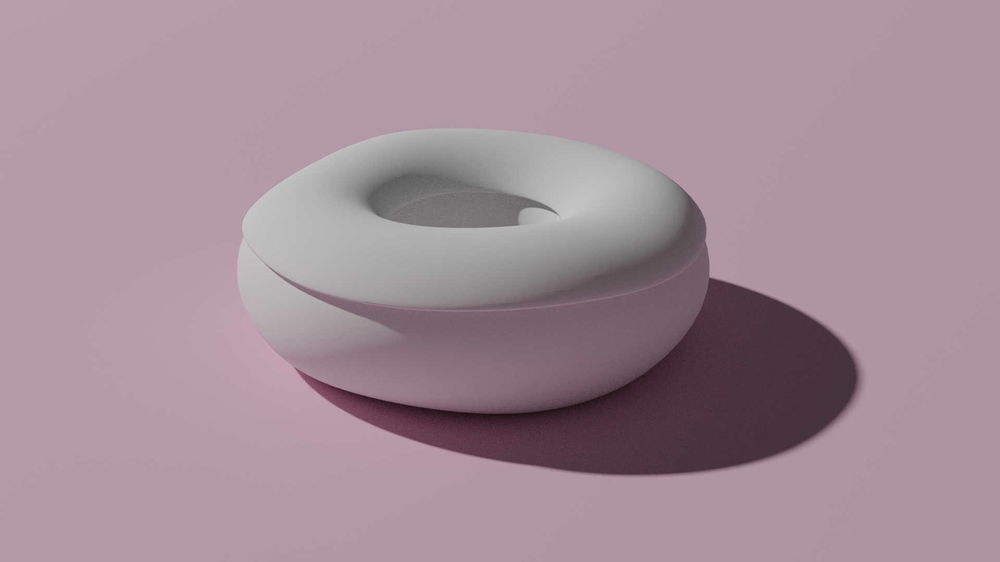
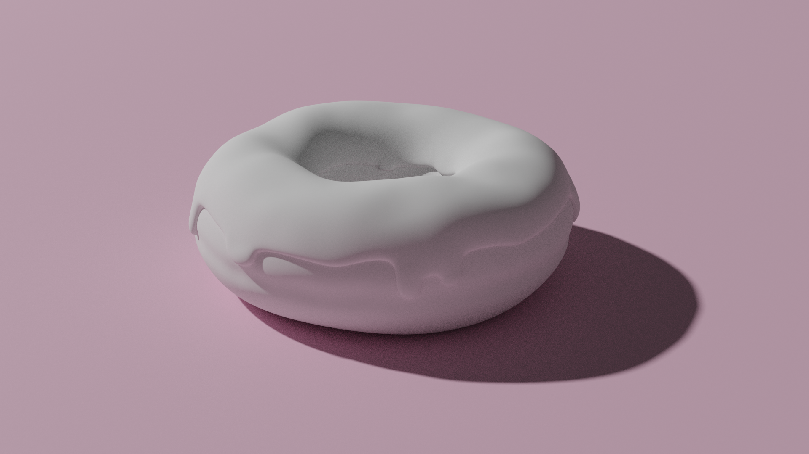
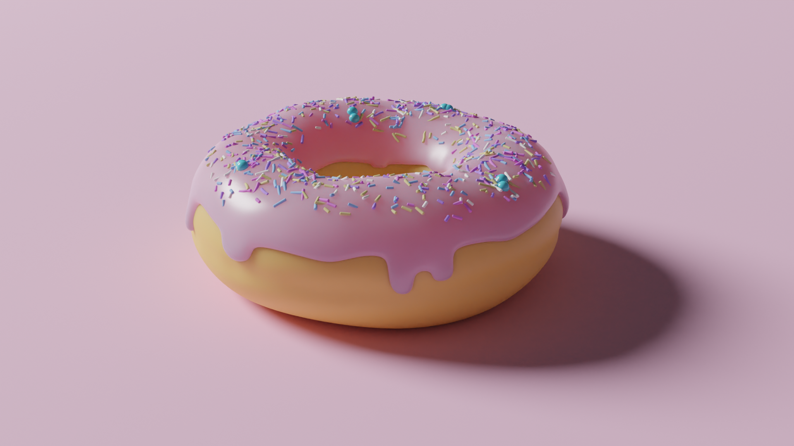
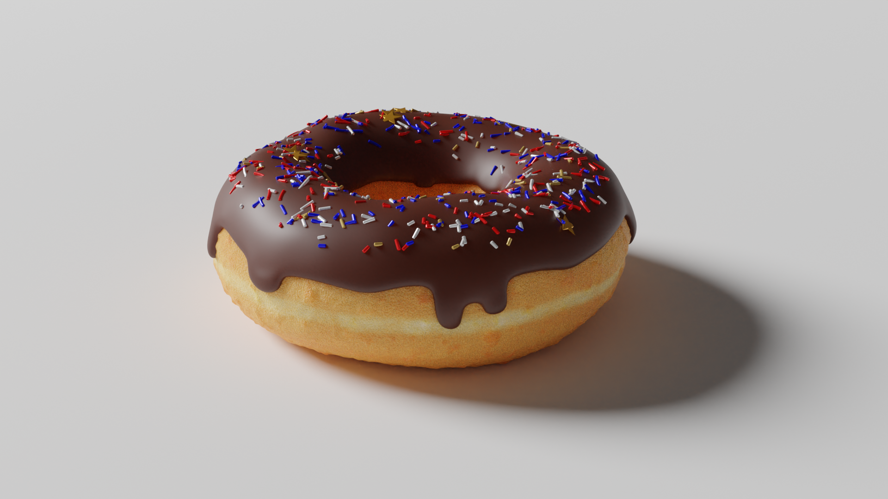

Veel mensen denken tegenwoordig dat gezond eten betekent dat je zo veel mogelijk groenten moet eten. Niks is echter minder waar! Het allerbelangrijkste ingrediënt in het menselijk dieet is energie! Energie is, zonder overdrijven, niks minder dan de reden dat we überhaupt eten.
Als iemand te weinig energie binnenkrijgt volgen de eerste klachten vaak al binnen een aantal uur. Houdt het energietekort aan, dan nemen lichamelijke prestaties merkbaar af. En na enkele weken kan dit zelfs een anderszins gezond persoon fataal worden.
Daarentegen zijn secundaire voedingstoffen als vitamen, vezels en eiwitten veel minder cruciaal. Vaak duurt het hierbij weken voordat zelfs maar de eerste verschijnselen van een tekort zichtbaar zijn. Op de lange termijn is het natuurlijk belangrijk om ook een beetje op deze inname te letten. Vooral bij groeiende kinderen en personen met een zwakker gestel. Maar het staat buiten kijf dat de primaire focus op energie moet liggen.
Daarom is dit boek gewijdt aan een meesterlijk efficiënte manier om een mens van energie te voorzien: de deegnoot.
Een deegnoot bevat een brede combinatie van energiebronnen. De basis wordt gevormd door koolhydraten uit granen, rijkelijk aangevuld met suikers. Om de werking op de lange termijn te garanderen worden er met behulp van een frituur nog extra oliëen toegevoegd.
Het eerste wat men nodig heeft om een deegnoot te maken is een schoon, plat oppervlak. Zorg voor voldoende ruimte om te werken, en om de deegnoot van alle kanten te kunnen inspecteren. De kleur is niet bijzonder belangrijk, maar mocht een een suggestie willen: roze schijnt populair te zijn.
Neem vervolgens een basisdeegnoot, en plaats deze op het oppervlak.

Strijk de basisdeegnoot glad, en trek en duw hem in de gewenste vorm. Voorlopig gaat het vooral om de globale vorm. De fijnere details komen later.
Een te perfecte vorm is niet alleen ongeloofwaardig, het is ook ontzettend saai. Een menselijk brein wil bezig gehouden worden, en als dingen erg regelmatig zijn worden ze te makkelijk door de hersenen weggefilterd.
Tegelijkertijd is het wel belangrijk om te onthouden dat we hier proberen om variatie aan te brengen in een basisvorm. Het is dus niet de bedoeling dat de deegnoot er uit gaat zien alsof die uit klei geboetseerd is.
Veel mensen denken bij het beoordelen van eetbare creaties meteen aan smaak, maar verassend genoeg is dat niet zo heel belangrijk. Geur komt eerder en sterker binnen bij mensen, en werkt ook door in de smaakbeleving. Maar wat nog vaker onderschat wordt is uiterlijk.
Onderzoek heeft aangetoond dat ook uiterlijk doorwerkt op de smaakbeleving: blauw belichte aardappelen smaken vies. En uiteraard is uiterlijk extra belangrijk bij etaleren, waar een klant de smaak en geur vaak pas na aankoop kan ervaren.
De makkelijkste manier om een mooi glazuur te maken is om te beginnen met een kopie van de bovenkant van onze deegnoot. Trek deze iets naar boven, en geef hem wat volume. Wees vooral niet te karig, want glazuur is energie!
Trek hier en daar wat aan de rand van het glazuur om een sprekender beeld te creëren. Wees speels, maar denk aan de boodschap: een overvloed aan suikers, die bijna van de deegnoot af dreigt te druipen.
Nu we de basisvorm van de deegnoot en het glazuur hebben is het tijd om wat meer details toe te voegen. Bij de deegnoot drukken we de evenaar een beetje naar binnen, en we geven het glazuur wat meer textuur.
Ook gaan we de onderrand van het glazuur wat meer volume geven. Bij vloeistoffen zorgt de wisselwerking tussen zwaartekracht en oppervlaktespanning ervoor dat ze dikker zijn aan de onderkant. Denk bijvoorbeeld aan een druppel.
Bij de deegnoot mag best scherp gewerkt worden, maar pas op de het niet abrupt wordt. En voor het glazuur willen we weer een vloeiende indruk creëren, en tegelijkertijd voorkomen dat het te saai en gelijkmatig oogt.
Voordat we verder gaan is het een goed idee om alvast wat kleur toe te voegen. Dit zal ons bij de volgende stappen helpen om de juiste balans te vinden.
Voor de deegnoot zelf is een gelige kleur met een hint van goudbruin altijd een veilige keuze. Met een egale kleur ziet het er nog niet geloofwaardig uit, maar dat is niet erg. Voorlopig gaat het alleen om de kleurbalans.
Met de kleur van het glazuur kunnen we een stuk creatiever zijn. Roze is wederom een populaire keuze, maar er zijn veel meer kleuren die goed kunnen werken. Contrasteer met de kleur van de deegnoot, zodat de combinatie goed in het oog springt. Wees niet bang om een felle kleur te kiezen, of juist iets als een mooi, diep chocoladebruin.
Let hier ook goed op de materiaaleigenschappen. He glazuur zal meer glinsteren dan de deegnoot. En afhankelijk van de gekozen kleur kan het ook belangrijk zijn om rekening te houden met de spreiding van licht in het glazuur. Een lichtgekleurd suikerglazuur zal hier bijvoorbeeld meer baat bij hebben dan een donker chocoladeglazuur.
Om de deegnoot nog wat speelser te maken gaan we wat extra elementen toevoegen. Het is tijd voor.... sprinkles!
Het doel is hier om meer variatie en kleur toe te voegen. Zowel contrasterende als complimenterende kleuren kunnen hier een rol bij spelen. Ook is het belangrijk om de vormen wat te variëren: grote spinkles, kleine sprinkles. Rechte sprinkles, kromme sprinkles. En wees ook niet bang om een paar elementen toe te voegen die wat meer uit de toon vallen.
Zorg dat de sprinkles op de juiste plek terecht komen, maar let ook hierbij op dat het resultaat niet te gelijkmatig wordt. Speel met de plaatsing en oriëntatie, en denk ook weer aan de vloeibaarheid van het glazuur, dat de sprinkles als het ware gevangen houdt.
Eindelijk is nu de tijd gekomen om een einde te maken aan de veel te egale kleur van onze deegnoot. Daar waar we de evenaar van de deegnoot wat ingedrukt hebben gaan we deze een lichtere kleur geven. Let er op dat deze kleur alleen voor het naar binnen gedrukte deel is.
De rest van de deegnoot gaan we ook wat meer textuur geven. We willen over het gehele oppverlakte kleine variaties toevoegen, en op enkele plekken wat luchtblaasjes onder het oppervlak van de deegnoot. En we maken de deegnoot iets donkerder, daar waar het oppervlak meer uitsteekt.
En TADA! Onze hoogstpersoonlijk zelfgemaakte deegnoot! Smakelijk!
Nu we de basisprincipes kennen kunnen we eindeloos variëren. Zie bijvoorbeeld deze deegnoten, "Kerstboom" & "Freedom Chocolate"!
